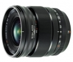

此款镜头具有16mm的固定焦距（相当于35mm格式的24mm），视角宽广，光学性能优异。其采用了F1.4的最大光圈设计，即使在弱光条件下也能呈现高的图像质量，而且微距拍摄的最近工作距离仅有15cm，让您轻松拍摄出细节丰富的散景效果。此外，高速自动对焦功能、全密封及防尘结构（可在-10°C的低温环境下工作）以及优秀的便携性，进一步扩展了此款镜头的拍摄能力。
富士入的第一个头，拍人像用，结果买来就没拍过人了。做工一流，分辨率很好，有轻微色散，焦外球差矫正略过度，重了点。
1.分辨率很好 2.做工非常好，赞
1.轻微色散 2.球差矫正轻微过度 3.重
好镜头，没得说，画质、做工均一流！
近摄距离很近，几乎可以顶着被摄对象拍摄，可以客串广角微距了、富士微单的星空利器，广角f1.4大光圈、非常近的近摄距离，拍拍小品也非常棒。画质中央、边缘均一流，f2的锐度已经很棒了。有三防、光圈刻度。
除了略贵，几乎没有缺点。f1.4还是很容易看出锐度下降，f2就非常好了。